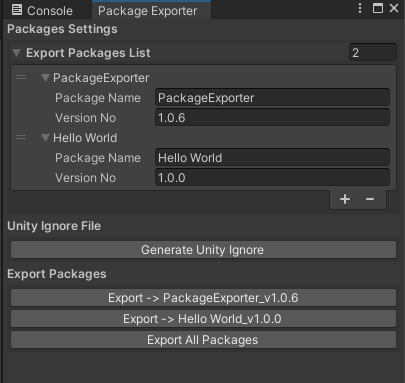
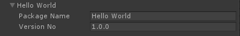
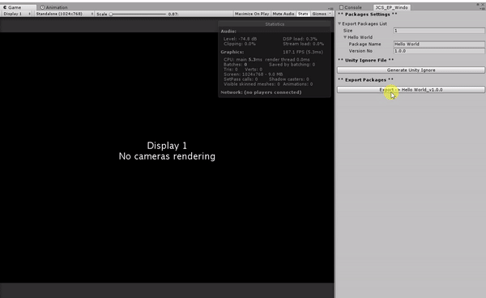

Package Exporter#
Export multiple packages by just one click, with no need to uncheck the assets.

This package is a packaging (exporting) tool for Unity package system. It allows you to export multiple packages with different contents.
P.S. Notice this package will only work in Editor, and does not expect user to use it in production builds.
🏆 Features#
- Export multiple packages in a project
- Export method similar to
.gitignore(easy for coder) - Lightweight, no other dependencies
- Clean, no files are generated
- Highly compatible to any Unity version
🔨 How to use?#
Here explains how you use this package correctly.
🔍 Step 1. Import Package#
You will need to import the package to your project. The package can be download from here.
🔍 Step 2. Start using Package Exporter Window#
You can start the PackageExporter window from the menu bar PackageExporter.
🔍 Step 3. Fill package info and generate .unityignore file#

After you fill the info, then hit Generate Unity Ignore button.
🔍 Step 4. Edit .unityignore file#
All the .unityignore files can be found under PackageExporter/unityignore
directory.
🔍 Step 5. Export...#
Once the .unityignore file is generated, the according package
export button should appear.
🎉 Done, and Enjoy! 🥳#
Now you can manage as many packages you want to export! 🎉
.unityignore File Example#
Generated .unityignore file for Hello World package.
#
# Thank you for using `Package Exporter`. This is the generated
# unityignore file.
#
# Package Name: Hello World
# Version: 1.0.0
# Creation Date: 2017-10-25 06:58:14
#
# Package Link: https://github.com/Pixisoft/PackageExporter
# Author: Shen, Jen-Chieh
# Email: pixisoft.tw@gmail.com
#
# Ignore this plugin itself.
ProjectExporter
🚀 Exporting#
Export the package Hello World.

🖥️ Command line arguments#
You can export package by using Unity's batch mode.
| Command | Details |
|---|---|
--name |
Name of the exported pckage listed under unityignore directory. |
--version |
Version of the exported package. |
--savePath |
Where to save the exported package. |
For example,
$UNITY_PATH -batchmode -quit -projectPath "." -executeMethod PackageExporter.BatchMode.Export --name "Hello World" --version "0.1.0" --savePath "."
The $UNITY_PATH is the path to Unity executable hence it depends on variant OS.
On macOS,
/Applications/Unity/Unity.app/Contents/MacOS/Unity
On Windows,
"C:\Program Files\Unity\Editor\Unity.exe"
For more information, see Command line arguments.
📝 Todo List#
- [ ] Support ingore extension syntax. (*.meta)
❓ FAQ#
💫 Why should I use this package?#
This is often use when you have multiple target to export but it's hard to memorize all contents to export for each packages. This tool resolve these issues, and provides a method similar to Git (Source Control) ignore system.
💫 Should I commit .unityignore files to source control?#
If you wish to share package export settings then yes, you should include
.unityignore files to repository. Other than that, the answer would be no.
License#
Copyright (c) Pixisoft. All rights reserved.
Licensed under MIT. See LICENSE.txt for details.